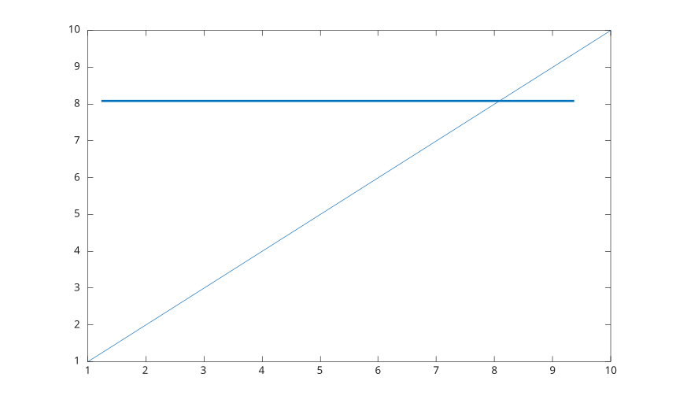
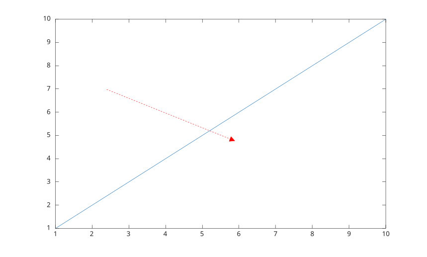
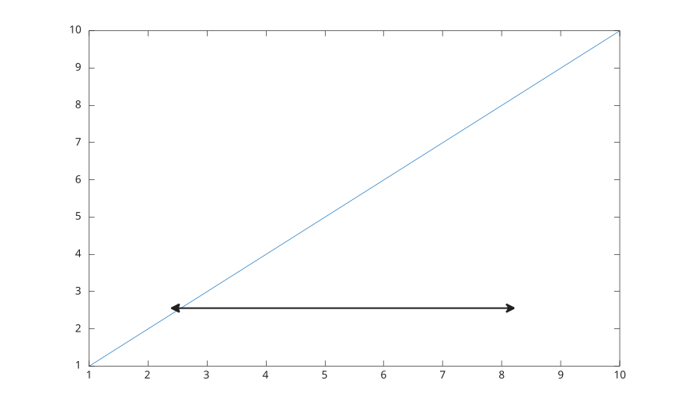
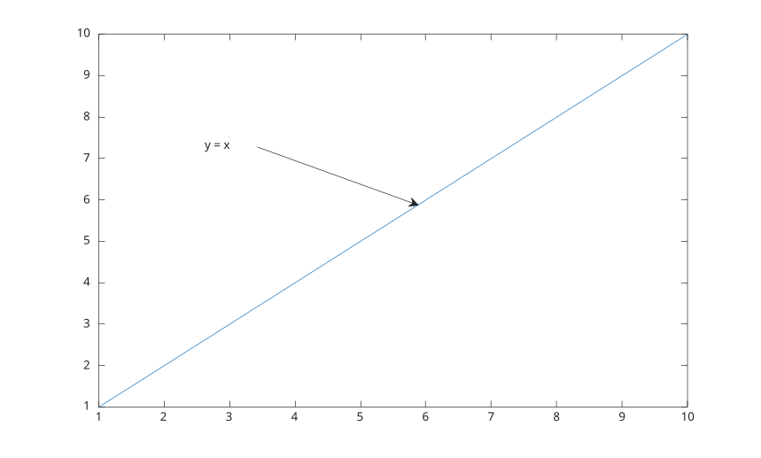
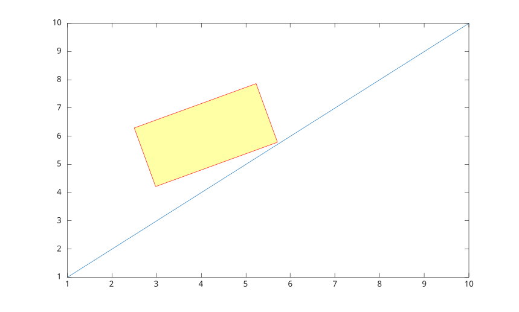
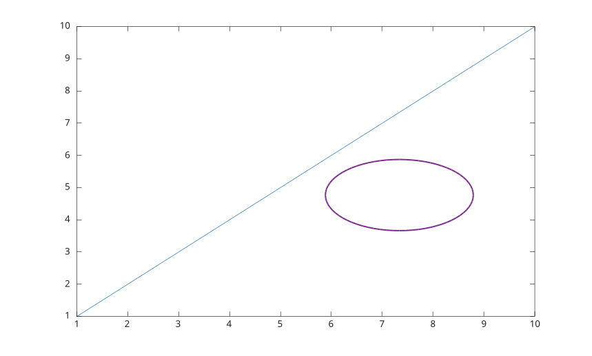
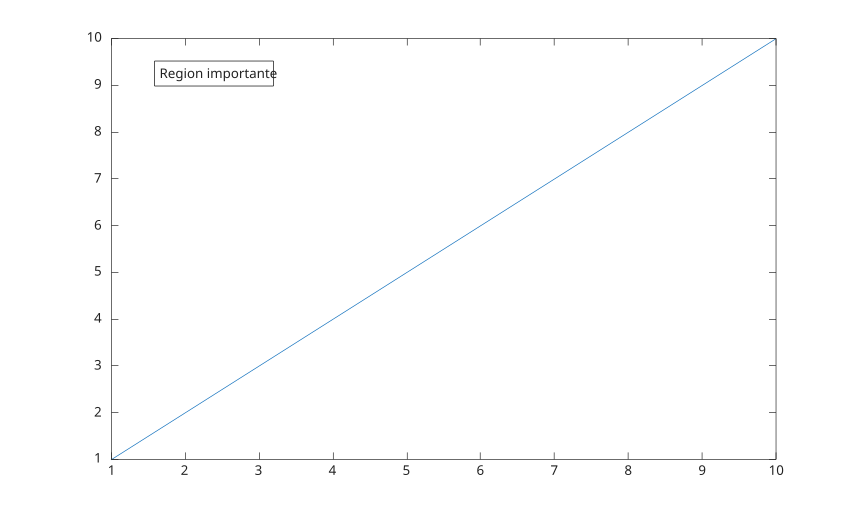

annotation(lineType, x, y)
annotation(lineType)
annotation(shapeType, dim)
annotation(shapeType)
annotation(..., propertyName, propertyValue)
annotation(fig, ...)
go = annotation(...)
| Paramètre | Description |
|---|---|
| lineType | 'line', 'arrow', 'doublearrow' ou 'textarrow'. |
| shapeType | 'rectangle', 'ellipse' ou 'textbox'. |
| x, y | Vecteurs a deux elements qui definissent les coordonnees de debut et de fin. |
| dim | Vecteur a quatre elements [x y w h]. |
| fig | Figure cible. |
| Paramètre | Description |
|---|---|
| go | Objet graphique annotation. |
annotation cree des annotations dans les coordonnees de la figure. Les unites par defaut sont normalisees.
Les unites prises en charge sont 'normalized', 'inches', 'centimeters', 'characters', 'points' et 'pixels'.
Les rectangles et ellipses prennent en charge Position, Rotation, Units, Color, FaceColor, LineStyle et LineWidth. Rectangle prend aussi en charge FaceAlpha.
Voir proprietes de annotation pour la liste complete des proprietes.
f = figure();
plot(1:10);
annotation('line', [0.15 0.85], [0.75 0.75], ...
'Color', [0 0.45 0.74], 'LineWidth', 2);
f = figure();
plot(1:10);
annotation('arrow', [0.25 0.55], [0.65 0.45], ...
'Color', 'red', 'LineStyle', '--', 'HeadStyle', 'plain');
f = figure();
plot(1:10);
annotation('doublearrow', [0.25 0.75], [0.25 0.25], ...
'Head1Style', 'vback1', 'Head2Style', 'cback3', 'LineWidth', 1.5);
f = figure();
plot(1:10);
annotation('textarrow', [0.3 0.55], [0.7 0.55], ...
'String', 'y = x', 'TextBackgroundColor', 'white');
f = figure();
plot(1:10);
annotation('rectangle', [0.3 0.4 0.25 0.2], ...
'Color', 'red', 'FaceColor', 'yellow', 'FaceAlpha', 0.35, 'Rotation', 20);
f = figure();
plot(1:10);
annotation('ellipse', [0.55 0.35 0.25 0.2], ...
'Color', [0.49 0.18 0.56], 'FaceColor', 'none', 'LineWidth', 1.5);
f = figure();
plot(1:10);
annotation('textbox', [0.18 0.78 0.28 0.1], ...
'String', 'Region importante', 'FitBoxToText', 'on', ...
'BackgroundColor', 'white', 'EdgeColor', 'black');